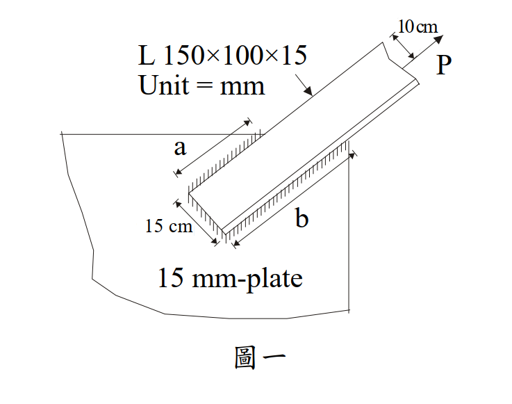
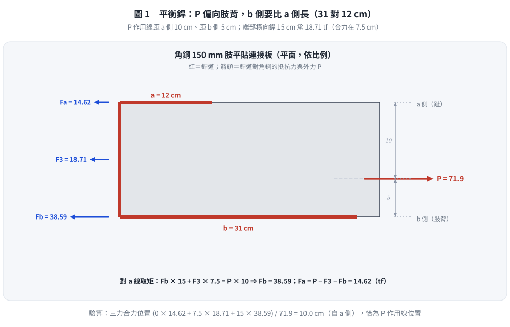
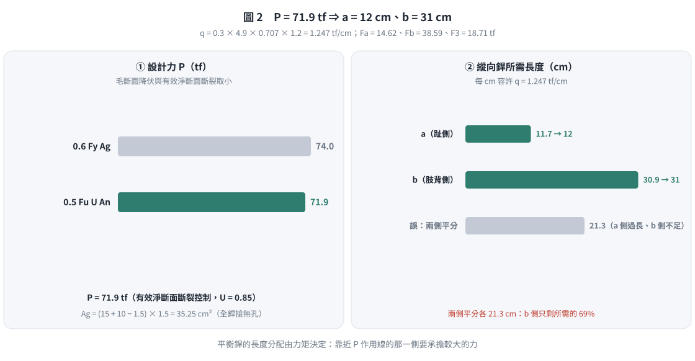

📄 題目正本：考卷原文・附圖・判讀清單（待確認）
SS-2007-1 題目正本
本檔只記錄考卷上寫了什麼、圖上畫了什麼，不含任何解法。解析見同資料夾
SS-2007-1.md。
判讀清單經使用者確認前，狀態為「待確認」；確認後本檔原則上不再修改（改動須回考卷原圖並記 log）。
| 項目 | 內容 |
|---|---|
| 考卷 | raw/exams/SS-2007_鋼結構設計.pdf 第 1 頁（全三頁之第一頁），第一題 |
| 考年 | 民國 96 年（2007） |
| 配分 | 25 分 |
| 附圖 | 1 張（圖一：角鋼銲接於連接板），SS-2007-1-fig-1.png |
| 判讀狀態 | 待確認（轉錄 2026-11-02，PyMuPDF 110 dpi 全頁＋圖一 400 dpi 局部目視，盲讀後才比對既有解析） |
1. 考卷原文（逐字）
一、有一角鋼（L 150 mm×100 mm×15 mm）使用填角焊焊接在一塊連接板（厚度 1.5 cm）上，使用此角鋼之材料強度，試依據工作應力法（ASD）設計焊接長度 a 及 b。（25 分）
鋼材之降伏強度 $F_y$ = 3.5 tf/cm²，抗拉強度 $F_u$ = 4.8 tf/cm²，焊材之 $F_u$ = 4.9 tf/cm²，填角焊腳長（Leg length）使用 1.2 cm，角鋼之形心離端點長度為 10 cm（如圖一中外力 P 離端點之長度，P 為斷面上之總外力），面積折減係數 U = 0.85。（註：圖一中斜線部分表示填角焊之區域）
2. 考卷給的公式、附表與參數
- 題文：L150×100×15；連接板厚 1.5 cm；$F_y$ = 3.5、$F_u$ = 4.8 tf/cm²；焊材 $F_u$ = 4.9 tf/cm²；腳長 1.2 cm；形心距 10 cm；U = 0.85。
- 本題沒有印公式，也沒有給角鋼斷面積（須由尺寸計算或查表）。
- 第 3 頁公式集為梁柱用，與本題無關。
- 卷首注意事項：㈠可以使用電子計算器；㈡不必抄題。
3. 附圖

圖面文字照錄：L 150×100×15；Unit = mm；10 cm；P；a；15 cm；b；15 mm-plate；圖一。
4. 判讀清單
「把握」標不確定者請優先確認；解讀類項目（題目用字的意思）另標「解讀」。
| # | 項目 | 判讀 | 圖上／題文依據 | 把握 |
|---|---|---|---|---|
| 1 | 貼板的肢 | 150 mm 肢平貼連接板（端部橫向焊標 15 cm） | 圖一 | 確定 |
| 2 | 焊道 | 三段：上緣縱向 a、下緣縱向 b、端部橫向 15 cm | 斜線區（400 dpi） | 確定 |
| 3 | 肢背側 | 下緣（b 側）有另一肢的稜線 → b 側為肢背、a 側為趾 | 下緣平行線 | 確定（解讀） |
| 4 | 「端點」與 10 cm | 由上緣（a 側、趾）量到 P 作用線 10 cm，即距 b 側（肢背）5 cm | 尺寸線端點＋題文「如圖一中外力 P 離端點之長度」 | 確定（解讀） |
| 5 | 設計力 | 「使用此角鋼之材料強度」→ P 取角鋼拉力容許強度（全斷面降伏與有效淨斷面斷裂取小） | 題文＋給 U | 確定（解讀） |
| 6 | 焊道容許應力 | 喉部 $0.3F_u$（焊材 4.9），題未給 | ASD 規範 | 確定（解讀） |
| 7 | 端部橫向焊 | 計入焊道群（平衡焊道設計時三段共同分擔） | 斜線區含端部 | 確定（解讀） |
轉錄：2026-11-02（SS-U1-4 題目正本推廣・批 1）
考題編號：SS-2007-1
主分類： SS-U1-4 接合之分析與設計
副分類： SS-U1-1 拉力及壓力桿件
設計法： ASD
標籤： 填角銲 ASD 平衡銲道 不等肢角鋼 剪力遲滯 U值 拉力桿件 銲道容許應力
1. 原始題目重述
（依考卷原文，96 年第 1 頁第一題）
一、有一角鋼（L 150 mm×100 mm×15 mm）使用填角焊焊接在一塊連接板（厚度 1.5 cm）上，使用此角鋼之材料強度，試依據工作應力法（ASD）設計焊接長度 a 及 b。（25 分）
鋼材之降伏強度 $F_y = 3.5$ tf/cm²，抗拉強度 $F_u = 4.8$ tf/cm²，焊材之 $F_u = 4.9$ tf/cm²，填角焊腳長（Leg length）使用 1.2 cm，角鋼之形心離端點長度為 10 cm（如圖一中外力 P 離端點之長度，P 為斷面上之總外力），面積折減係數 $U = 0.85$。（註：圖一中斜線部分表示填角焊之區域）
圖說（依考卷原圖 450 dpi 目視判讀，2026-11-01 更正）：角鋼 150 mm 長肢平貼連接板，斜線區為三段填角銲：沿上緣的縱向銲 a、沿下緣的縱向銲 b、以及角鋼端部的橫向銲 15 cm（圖中「15 cm」為長肢寬）。右上角「10cm」尺寸線由角鋼上緣（a 側）量到 $P$ 作用線，在角鋼平面內 → $P$ 距 b 側 5 cm。下緣畫有雙線（外伸短肢所在，即肢背），角鋼形心距肢背約 5.06 cm、距趾端 9.94 cm ≈ 10 cm，與題文一致。
判讀表
| 項目 | 判讀 |
|---|---|
| 銲道 | 縱向 a（上緣，趾側）、縱向 b（下緣，肢背側）、端部橫向 15 cm |
| $P$ 位置 | 平面內，距 a 側 10 cm、距 b 側 5 cm（通過角鋼形心） |
| 設計力 | 「使用此角鋼之材料強度」→ $P$ = 角鋼拉力容許強度 |
| 銲腳 | 1.2 cm → 喉厚 0.848 cm |
| 求 | 平衡銲道長度 a、b（使銲道群合力通過形心） |
2. 考題核心精神與出題者意圖
本題是經典的平衡填角銲設計（balanced weld design）：
- 先求角鋼本身的 ASD 拉力強度（全斷面降伏 vs 有效淨斷面斷裂，$U = 0.85$）作為設計力 $P$
- 端部橫向銲長固定為肢寬 15 cm，其力 $F_3$ 作用於肢寬中點
- 對 a 線（或 b 線）取力矩，使三段銲道合力通過角鋼形心 → 消除平面內偏心
- $F_a$、$F_b$ 除以每 cm 容許強度得 a、b
「10 cm」是形心到端點（邊緣）的平面內距離，不是面外偏心。
3. 解題戰略地圖與陷阱分析
作戰計畫：
1. $A_g$ → $P = \min(0.6F_yA_g,\ 0.5F_uUA_n)$
2. 每 cm 銲道容許力 $q = 0.3F_u^{weld} \times 0.707w$
3. $F_3 = 15q$（作用於距兩緣 7.5 cm）
4. $\Sigma M_{a} = 0$：$F_b \times 15 + F_3 \times 7.5 = P \times 10$
5. $\Sigma F = 0$：$F_a = P - F_3 - F_b$
6. $a = F_a/q$、$b = F_b/q$，取整
陷阱分析：
| 陷阱 | 說明 | 應對策略 |
|---|---|---|
| ⚠️ 把 10 cm 當面外偏心 | 題文明寫「形心離端點長度」，圖上尺寸在角鋼平面內 | 10 cm 用於平衡銲道的取矩 |
| ⚠️ 漏掉端部橫向銲 | 斜線區含角鋼端部 15 cm | $F_3 = 15q$ 先扣除 |
| ⚠️ 設計力取誰 | 「使用此角鋼之材料強度」 | $P$ = 角鋼容許拉力，不是銲道容量 |
| ⚠️ a、b 對應哪一側 | P 距 a 側 10 cm、距 b 側 5 cm | 靠近 $P$ 的 b 較長 |
| ⚠️ 喉厚 | $0.707 \times 1.2 = 0.848$ cm |
3.5 變數層次分析（Variable Hierarchy Analysis）
複習提示：解題後，在每個卡住的知識點「卡關?」欄標記
⚠；第二次複習時只看有⚠的項目。
最終目標： 角鋼 ASD 拉力強度 → 平衡銲道取矩 → a、b 長度
主要公式（$\boxed{\phantom{x}}$ = 未知，待推導）
$$\boxed{P} = \min(0.6F_yA_g,\ 0.5F_uUA_n)$$
$$q = 0.3F_u^{weld} \times 0.707w, \qquad F_3 = q \times 15$$
$$\boxed{F_b} = \frac{P \times 10 - F_3 \times 7.5}{15}, \qquad \boxed{F_a} = P - F_3 - F_b$$
$$a = F_a/q, \qquad b = F_b/q$$
L1：題目直接給定
| 符號 | 數值 | 說明 |
|---|---|---|
| 角鋼 | L150×100×15 | 長肢貼板 |
| $F_y$／$F_u$ | 3.5／4.8 tf/cm² | 角鋼 |
| $F_u^{weld}$ | 4.9 tf/cm² | 銲材 |
| $w$ | 1.2 cm | 銲腳 |
| 形心距 a 側 | 10 cm | 附圖 |
| $U$ | 0.85 |
L2：需知識點推導
| 符號 | 公式 / 來源 | 卡關? |
|---|---|---|
| $A_g$ | $(15 + 10 - 1.5) \times 1.5 = 35.25$ cm² | |
| $0.6F_yA_g$ | 74.0 tf | |
| $0.5F_uUA_n$ | $0.5 \times 4.8 \times 0.85 \times 35.25 = 71.9$ tf（控制） | |
| $q$ | $0.3 \times 4.9 \times 0.848 = 1.247$ tf/cm | |
| $F_3$ | $1.247 \times 15 = 18.71$ tf | |
| $F_b$ | $(71.9 \times 10 - 18.71 \times 7.5)/15 = 38.59$ tf | |
| $F_a$ | $71.9 - 18.71 - 38.59 = 14.62$ tf | |
| a、b | 11.7 → 12 cm；30.9 → 31 cm |
L3：深層知識（不懂就卡住）
| 知識點 | 說明 | 卡關? |
|---|---|---|
| 平衡銲道 | 銲道群合力需通過構材形心，避免偏心造成額外彎矩與剪力遲滯 | |
| 剪力遲滯 $U$ | 只銲長肢，外伸肢應力傳遞不均 → 有效淨面積 $UA_n$ | |
| ASD 填角銲 | 喉部容許剪應力 $0.3F_u^{weld}$ |
4. 步驟化詳細計算過程
Step 1：角鋼容許拉力（設計力 $P$）
$$A_g = (15 + 10 - 1.5) \times 1.5 = 35.25\ \text{cm}^2 \quad \text{（不計圓角）}$$
全銲接無孔：$A_n = A_g$，$A_e = UA_n = 0.85 \times 35.25 = 29.96$ cm²
$$0.6F_yA_g = 0.6 \times 3.5 \times 35.25 = 74.0\ \text{tf}$$
$$0.5F_uA_e = 0.5 \times 4.8 \times 29.96 = 71.9\ \text{tf}$$
$$\boxed{P = 71.9\ \text{tf}}\ \text{（有效淨斷面斷裂控制）}$$
Step 2：每 cm 銲道容許力
$$q = 0.3 \times 4.9 \times 0.707 \times 1.2 = \boxed{1.247\ \text{tf/cm}}$$
尺寸限制：長肢厚 15 mm，最大銲腳 $15 - 1.6 = 13.4$ mm ≥ 12 mm OK；母材剪力 $0.4F_yt = 0.4 \times 3.5 \times 1.5 = 2.1$ tf/cm > $q$，銲道控制。
Step 3：端部橫向銲
$$F_3 = 1.247 \times 15 = 18.71\ \text{tf}\quad \text{（作用於距 a、b 兩緣各 7.5 cm）}$$
Step 4：平衡取矩（對 a 線）
$$F_b \times 15 + F_3 \times 7.5 = P \times 10$$
$$F_b = \frac{71.9 \times 10 - 18.71 \times 7.5}{15} = \boxed{38.59\ \text{tf}}$$
$$F_a = 71.9 - 18.71 - 38.59 = \boxed{14.62\ \text{tf}}$$

圖 1 平衡銲：三段銲道的合力必須落在 $P$ 的作用線上，所以靠近作用線的肢背側 b（31 cm）比趾側 a（12 cm）長得多。這張圖攔的是兩側等長、取矩線選錯，以及忽略端部橫向銲的力矩貢獻。
Step 5：銲道長度
$$a = \frac{14.62}{1.247} = 11.7\ \text{cm} \rightarrow \boxed{a = 12\ \text{cm}}$$
$$b = \frac{38.59}{1.247} = 30.9\ \text{cm} \rightarrow \boxed{b = 31\ \text{cm}}$$
（皆 ≥ 4w = 4.8 cm 最小長度；縱向銲長 ≥ 兩銲道間距 15 cm 之規定，a 為 12 cm 但有端部橫向銲閉合，可接受）
Step 6：雙路徑驗算
對 b 線取矩：$F_a \times 15 + F_3 \times 7.5 = P \times 5$ → $F_a = (359.6 - 140.3)/15 = 14.62$ tf，與 Step 4 一致。
合力位置檢查：$(14.62 \times 0 + 18.71 \times 7.5 + 38.59 \times 15)/71.9 = 10.0$ cm（自 a 側），恰為形心位置。
結論彙整
| 項目 | 結果 |
|---|---|
| 設計力 | $P = 71.9$ tf（$0.5F_uUA_n$ 控制） |
| 每 cm 容許力 | $q = 1.247$ tf/cm |
| 端部橫向銲 | 15 cm，18.71 tf |
| a（趾側，距 P 10 cm） | $\boxed{12\ \text{cm}}$（14.62 tf） |
| b（肢背側，距 P 5 cm） | $\boxed{31\ \text{cm}}$（38.59 tf） |

圖 2 設計力由有效淨斷面斷裂控制（71.9 tf），再依力矩分配兩側銲長。這張圖攔的是以 $0.6F_yA_g$ 為設計力，以及兩側平分銲長（b 側只剩所需的 69%）。
5. 關鍵爭議點與進階探討
5.1 若「10 cm」量自 b 側
a、b 對調（a = 31、b = 12 cm）。圖上尺寸線自上緣起算，且角鋼形心距趾端 9.94 cm、距肢背 5.06 cm（肢背在下緣雙線處），兩者一致指向 P 距 a 側 10 cm。
5.2 不設端部橫向銲
$F_b = P \times 10/15 = 47.9$ tf → b = 38.4 cm；$F_a = 24.0$ tf → a = 19.2 cm；總長 57.6 cm，比含端銲的 58 cm（12＋31＋15）相近，但構材總長較長。
5.3 原解錯在哪（2026-11-01 勘誤）
| 項目 | 原解 | 更正 |
|---|---|---|
| 10 cm 的意義 | 「P 距連接板面 10 cm」（面外偏心），另加彎矩 $10P$ | 平面內：形心距 a 側邊緣 10 cm |
| 銲道長度 | 自行假設 a = b = 25 cm、無端銲 | 題目要求設計 a、b；含端部 15 cm 橫向銲 |
| 答案 | 容許 $P = 37.4$ tf（未設計 a、b） | $P = 71.9$ tf，a = 12 cm、b = 31 cm |
6. 依最新規範（AISC 360-16／-22）對照
| 項目 | 考卷（ASD 1989 系） | AISC 360-16／-22（ASD） |
|---|---|---|
| 拉力構材 | $0.6F_yA_g$、$0.5F_uA_e$ | $F_yA_g/1.67$、$F_uA_e/2.00$，相同 |
| $U$ | 題目給 0.85 | 表 D3.1 case 4（縱向＋橫向銲）依 $l/w$ 取值 |
| 填角銲 | $0.3F_u^{weld}$ | $0.6F_{EXX}/2.00 = 0.3F_{EXX}$，相同 |
| 縱橫向銲合併 | 直接相加 | J2.4(c)：$R_n = \max(R_{nwl} + R_{nwt},\ 0.85R_{nwl} + 1.5R_{nwt})$ |
以 360-16 第二式估算：$0.85q(a+b) + 1.5 \times 18.71 = 71.9$ → $a + b = 41.4$ cm（考卷版 42.7 cm），縱向銲總長可省約 3%。
修正日期：2026-11-01（依考卷原文與原圖 450 dpi 目視判讀：「角鋼之形心離端點長度為 10 cm」為角鋼平面內 P 作用線距 a 側邊緣之距離（P 距 b 側 5 cm），原解誤作「P 距連接板面 10 cm」之面外偏心並另加彎矩；原解自行假設 a = b = 25 cm 且漏掉端部 15 cm 橫向銲，只求出容許 P = 37.4 tf，未依題意設計 a、b。更正為平衡銲道設計：P = 角鋼 ASD 強度 71.9 tf（0.5FuUAn 控制），端銲 18.71 tf，對 a 線取矩得 a = 12 cm、b = 31 cm；新增對 b 線取矩與合力位置雙路徑驗算、§6 對照）
圖解補繪：2026-11-03（向量圖 2 張，腳本 gen_SS-2007-1.py，改輸入可原地重跑；SVG 供 wiki／PDF，2× PNG 供 pptx／影片）
驗證狀態：unverified